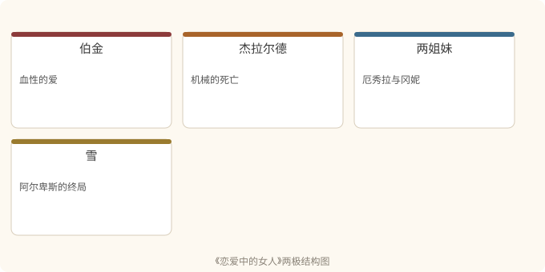

恋爱中的女人
一、基本信息
| 作者 | 劳伦斯 |
|---|---|
| 成书/出版 | 1920年（作者页 B125 口径：恋爱中的女人（1920）） D.H. Lawrence — Encyclopaedia Britannica（百科全书） |
| 国别/地区 | 英国 |
| 时代 | 现当代 · 20世纪 |
| 体裁 | 长篇小说 |
| 语言 | 英语 |

《恋爱中的女人》两极结构图（主题·结构图）
二、创作背景
作者页（B125）：劳伦斯 major_works 载'恋爱中的女人（1920）'（B125 作者页定位，详见 erzisonai 条核对）。
题材（通说待核）：厄秀拉与冈妮两姐妹——伯金与杰拉尔德的两极男性（血性与机械）。
三、内容脉络
两对男女的四种关系：婚姻、友谊、性、死亡（通说待核）。
杰拉尔德雪地之死（通说待核）。
四、主要人物表
| 人物 | 身份 | 说明 |
|---|---|---|
| 伯金 | 督学 | （通说待核） |
| 杰拉尔德 | 矿主之子 | 机器的化身（通说待核） |
五、主题与艺术特点
- '血性'与'机械'的两极（通说——劳伦斯哲学）。
- 两姐妹的双线（通说待核）。
- 工业社会的死亡（通说）。
六、影响与评论
- 作者页：劳伦斯巅峰之作（B125 作者页口径）。
D.H. Lawrence — Encyclopaedia Britannica（百科全书） - 与《虹》为姊妹篇（通说待核）。
D.H. Lawrence — Encyclopaedia Britannica（百科全书）
七、阅读建议
难点
- 劳伦斯哲学的对白。
- 双线结构。
- 《恋爱中的女人》（人民文学出版社，通说待核）。
- 英文原版（公有领域渐近）。
《虹》之后。
八、待核实
- 1920年出版（Thomas Seltzer美国版说）核对。
- 伯金/杰拉尔德/冈妮人名核对。
- 姊妹篇关系待核。
本页主要来源
劳伦斯的其他收录作品：儿子与情人